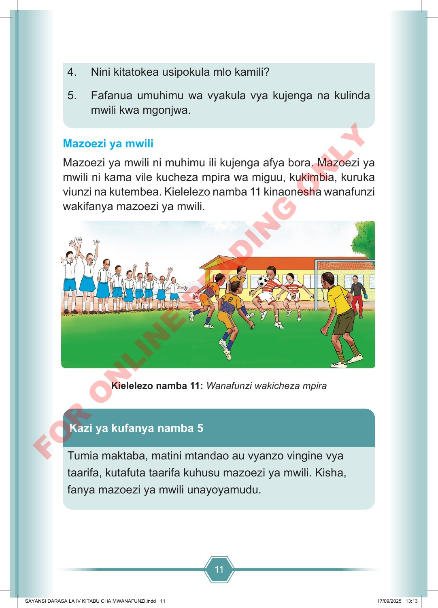

11 4. Nini kitatokea usipokula mlo kamili? 5. Fafanua umuhimu wa vyakula vya kujenga na kulinda mwili kwa mgonjwa. Mazoezi ya mwili Mazoezi ya mwili ni muhimu ili kujenga afya bora. Mazoezi ya mwili ni kama vile kucheza mpira wa miguu, kukimbia, kuruka viunzi na kutembea. Kielelezo namba 11 kinaonesha wanafunzi wakifanya mazoezi ya mwili. Kielelezo namba 11: Wanafunzi wakicheza mpira Tumia maktaba, matini mtandao au vyanzo vingine vya taarifa, kutafuta taarifa kuhusu mazoezi ya mwili. Kisha, fanya mazoezi ya mwili unayoyamudu. Kazi ya kufanya namba 5 SAYANSI DARASA LA IV KITABU CHA MWANAFUNZI.indd 11 SAYANSI DARASA LA IV KITABU CHA MWANAFUNZI.indd 11 17/09/2025 13:13 17/09/2025 13:13 F O R O N L I N E R E A D I N G O N L Y